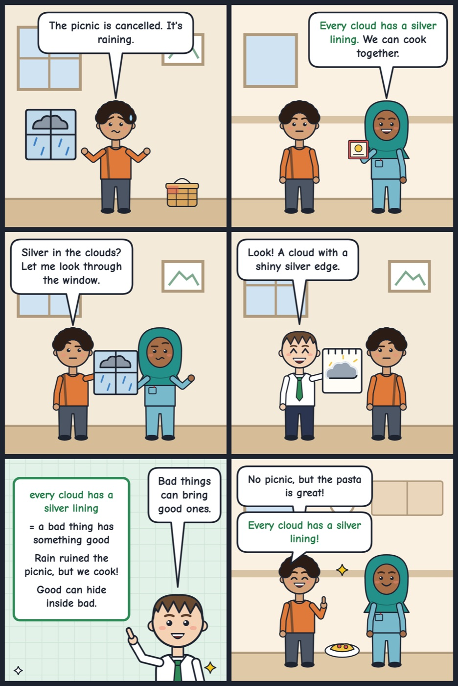

every cloud has a silver lining
Even a bad situation has something good in it.
The picnic is cancelled, but every cloud has a silver lining. We can watch a movie.
"Every cloud has a silver lining" means there is something good even in a bad situation.
Your turn
What is a silver lining in your week?
What is a silver lining in your week?
See it in a comic
